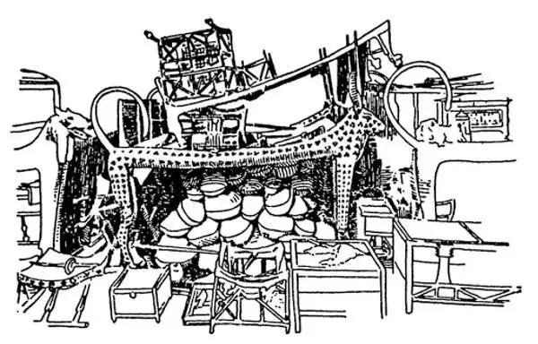
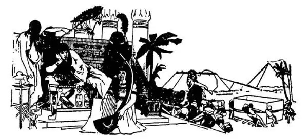
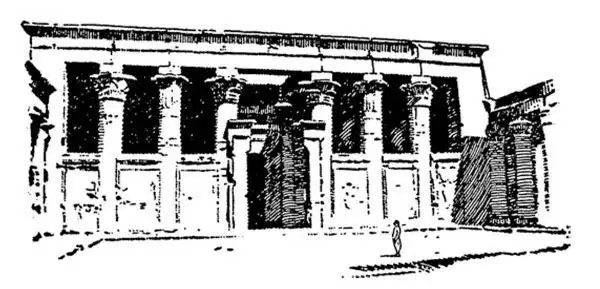

07
The Tomb Builders
建造陵墓的人

THE Egyptians believed that when they died, their souls stayed near by their bodies. So when a person died, they put in the tomb with him all sorts of things that he had used in daily life—things to eat and drink, furniture and dishes, toys and games. They thought the soul would return to its own body at the day of judgment. They wanted their bodies to be kept from decaying until judgment day, in order that the soul might then have a body to return to. So they pickled the bodies of the dead by soaking them in a mineral called natron and wrapping them round and round and round with a cloth like a bandage. A dead body pickled in this way is called a mummy
, and after thousands of years the mummies of the Egyptians may still be seen. Most of them are not, however, in the tombs where they were at first placed. They have been moved away and put in museums, and we may see them there now. Although they are yellow and dried up, they still look like
Little old men
All skin and bones.

Tutankhamen's tomb showing foods preserved （显示存放有食物的图坦卡蒙墓）
At first only kings or important people of the highest classes were made mummies, but after a while all the classes, except perhaps the lowest, were treated in the same way. Sacred animals from beetles to cows were also made into mummies.
When an Egyptian died, his friends heaped up a few stones over his body just to cover it up decently and keep it from being stolen or destroyed by those wild animals that fed on dead bodies. But a king or a rich man wanted a bigger pile of stones over his body than just ordinary people had. To make sure that his pile would be big enough, a king built it for himself before he died. Each king tried to make his pile larger than anyone else's until at last the pile of stones became so big it was a hill of rocks and called a pyramid . The pyramids therefore were tombs of the kings, who built them while they were alive, to be monuments to themselves when they were dead. In fact a king was much more interested in building a home for his dead body than he was in a home for his live body. So, instead of palaces, kings built pyramids. There are many of these pyramids built along the bank of the Nile, and most of them were built, we think, just after 3000 B.C.
In Nubia, up the Nile farther south in Africa, in what is now the modern nation of Sudan, kings also built pyramids for themselves. This is not surprising since Egyptians and Nubians shared many of the same religious beliefs.
When a building is being put up nowadays, men use derricks and cranes and engines to haul and raise heavy stones and beams. But the Egyptians had no such machinery, and though they used huge stones to build the pyramids, they had to drag these stones for many miles and raise them into place simply by pushing and pulling them. The three biggest of all the pyramids are near the city of Cairo. The largest one of them, which is called the Great Pyramid, was built by a king named Cheops. That name is pronounced just like KEY ops
. Here is his date:
Cheops……………………………2900 B.C.
It is said that one hundred thousand men worked twenty years to build his pyramid. It is one of the largest buildings in the world, and some of the blocks of stone themselves are as big as a small house. I have been to the top of it, and it is like climbing a steep mountain with rocky sides. I have also been far inside to the cave-like room in the center where Cheops's mummy was placed. There is nothing in there now, however, except bats that fly about in the darkness, for the mummy has disappeared—been stolen, perhaps.
Near the Pyramid of Cheops is the Sphinx. It is a huge statue of a lion with a man's head. Although it is big, it was carved out of one single rock. The Sphinx is a statue of the god of the morning, and the head is that of one of the Egyptian pharaohs who built a pyramid near that of Cheops. The desert sand has covered the paws and most of the body. Though the sand has been dug away from time to time, the wind quickly covers the body with sand again.

Cheops building his pyramid（建造金字塔的胡夫）
The Egyptians carved other large statues of men and women out of rock. These figures are usually many times bigger than life-size, and sit or stand stiffly erect with both feet flat on the ground and hands close to the body in the position some children take when they sit for their photograph.
They built huge houses for their gods. These were called temples. These temples had gigantic—that's the way it is spelled, though it means giant-ic — columns and pillars. Ordinary people standing beside them look like dwarfs.
Here is one of these temples, and you can see how different it is from a church.

Egyptian Temple （埃及的神庙）
They decorated their temples and pyramids, and the cases in which the mummies were put, with paintings. They did not try to make these paintings look real, however. For example, when they wanted to make a picture of water, they simply made zigzag lines to represent waves and colored them blue-green. When they wanted to draw a row of men behind a row in front, they put those in back on top of those in front. To show that a man was a king, they made him larger than the other men in the picture.
The Egyptians used bright colors in their pictures. They used a lot of red, yellow, and brown. You can see in their pictures that some people had dark skin and some had light tan skin. At first people from southern Egypt had darker skin, and people from near the Mediterranean had lighter skin. Over the years, people moved all over Egypt and then you could no longer tell where a person came from by the color of his or her skin.
【中文阅读】
古埃及人相信人死后，灵魂仍然在死者身边停留，所以一旦有人死去，他们就把他生前日常用的各种东西全都和他一起放进坟墓里——吃的、喝的、家具、碗碟、玩具、游戏用品，等等。他们认为灵魂在最后的审判日那一天，还会回到身体里去。他们希望尸体在审判日到来之前保存好不会腐烂，好让灵魂到时有个归属。所以，他们将死者的尸体浸泡在一种叫“泡碱”的矿物质里，然后用绷带一样的布把尸体一圈一圈又一圈地包裹起来。用这种方法处理过的尸体就是“木乃伊”，几千年后人们还可以看到这些埃及人的木乃伊。不过，他们中大多数已不在最初被安放的陵墓里了。他们已经被搬走放进博物馆里，我们现在可以去那儿参观。尽管木乃伊又黄又干，但是看上去仍然还像
小小老头儿
瘦得皮包骨。
开始，只有法老和上等阶级的重要人物才被做成木乃伊，但是没多久，各个等级的人都受到同样的待遇，也许只有最低等级的人除外吧。甚至那些神圣的动物，从甲虫到母牛也都被制成了木乃伊。
埃及人死后，他的朋友会将石头堆放在他的尸体上，只是为了把尸体体面地掩盖起来，以免被偷或被食尸动物吃掉。可是，法老或富人就希望堆放在尸体上的石头堆能比普通人的更大。为了确保足够大，法老在生前就开始建造。每一位法老都设法把自己的石堆造得比别人的大，这样到最后石头堆大得就像石头山，人们称之为“金字塔”。因此，金字塔就是法老的陵墓，法老生前就开始建造，死后作为自己的纪念碑。实际上，比起给自己建造居住的宫殿，法老更热衷于给死后的尸体筑坟修墓。因此，法老们不造宫殿，却建金字塔。在尼罗河的沿岸建造了很多这样的金字塔，我们认为它们中大多数建于公元前3000年以后。
在非洲尼罗河南边的努比亚，也就是今天的苏丹，国王们也为自己建造了金字塔。这不奇怪，因为埃及人和努比亚人有很多相同的宗教信仰。
今天建造房屋，人们要用起重机、吊车和发动机来拖运、起吊巨大的石头和大
梁，可是，古埃及人并没有这样的机械，而且尽管他们用巨大的石块建金字塔，但是，他们必须先将石头从好多里以外拖来，再抬到需要的位置，全靠众人一起推和拉。这些金字塔中最大的三座都靠近开罗，其中最大的叫“大金字塔”，是由一位叫胡夫的法老建造的。这是他生活的年代：
胡夫……………………………公元前2900年
据说，十万人花了二十年的时间才建成他的金字塔。这座金字塔是世界上最大的建筑物之一，有些石块本身就像一座小房子那么大。我曾经上到它的顶端，上去的过程就像是爬一座陡峭的山崖。我还曾经深入到金字塔中心，走进像山洞一样的房间，里面曾经安放着胡夫的木乃伊。然而，现在除了黑暗中飞来飞去的蝙蝠，什么都没有了，因为那具木乃伊已经消失了——可能是被盗了。
在胡夫金字塔的近旁就是斯芬克斯。这是一个巨大的狮身人面雕像。别看它如此巨大，却是用一整块石头雕刻而成的。斯芬克斯是早晨之神，雕像的头是按一位法老的样子雕成的，他在胡夫金字塔附近建造了自己的金字塔。沙漠里的风沙掩盖了雕像的爪子和大半个身体。尽管人们不时地将沙子清走，但是风很快又会吹起沙子将它的身体埋住。
古埃及人用岩石还雕刻了其他巨大的男女雕像。这些雕像比真人的尺寸大上好多倍，姿态或坐或站，双脚都平放在地上，手紧贴身子，就像有些孩子坐着等待照相时拘谨的样子。
他们为他们的神建造了巨大的房子，叫做神庙。这些神庙有些非常巨大。这些庙宇有巨大的石柱和石墩。普通人站在旁边看上去就像侏儒一样矮小。
下图是其中一座神庙（参见第37页图），你能看出它和教堂多么不同吧。
他们用各种图画装饰神庙、金字塔和存放木乃伊的棺木，但是，他们并不把图画画得很逼真。举例说，如果想画水，他们就只画几条曲折的线代表波浪，再将它们涂成蓝绿色。如果他们想画站在一排人后面的另一排人，他们就把站在后排的人画在前排人的上方。为了表示某个人是国王，他们就将他画得比画中其他人大些。
古埃及人在绘画中使用鲜亮的颜色，他们使用大量的红色、黄色和棕色。在他们的画中，你能看到有些人是黑皮肤，而有些人则是浅褐色的皮肤。最初，来自埃及南部的人皮肤颜色较黑，而靠近地中海沿岸的人皮肤颜色较浅。随着岁月的流逝，人们迁徙到埃及各地，你再也无法从肤色上看出一个埃及人到底来自何处。